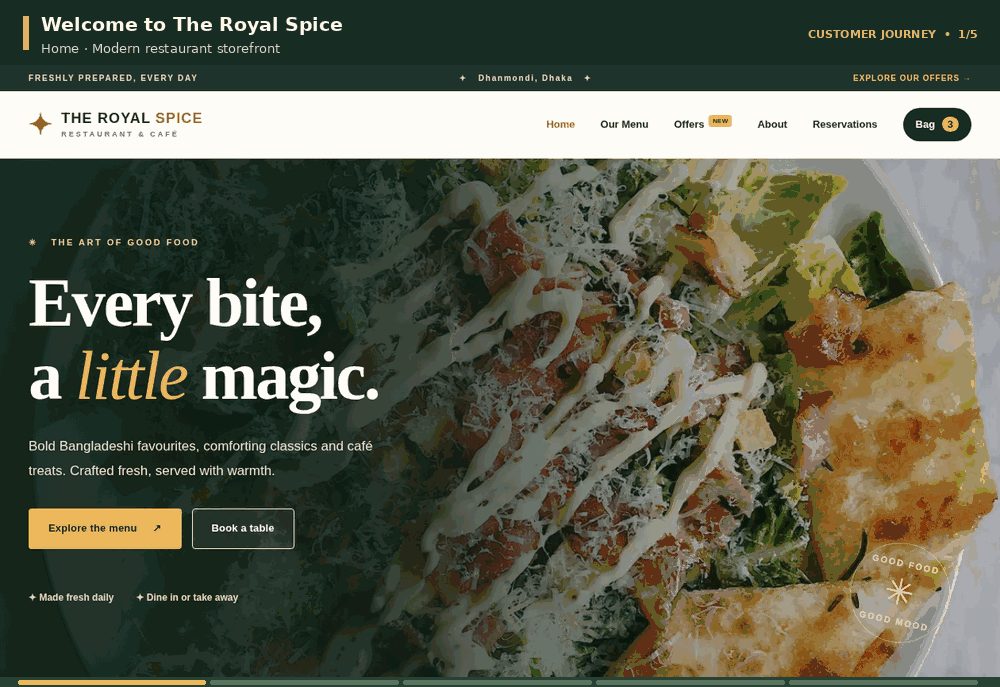
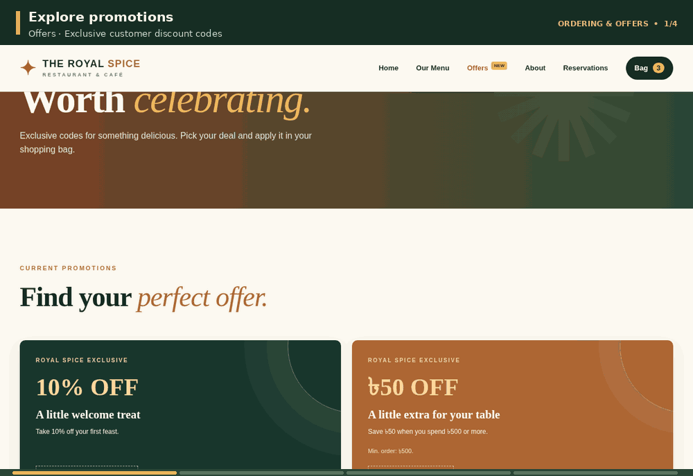
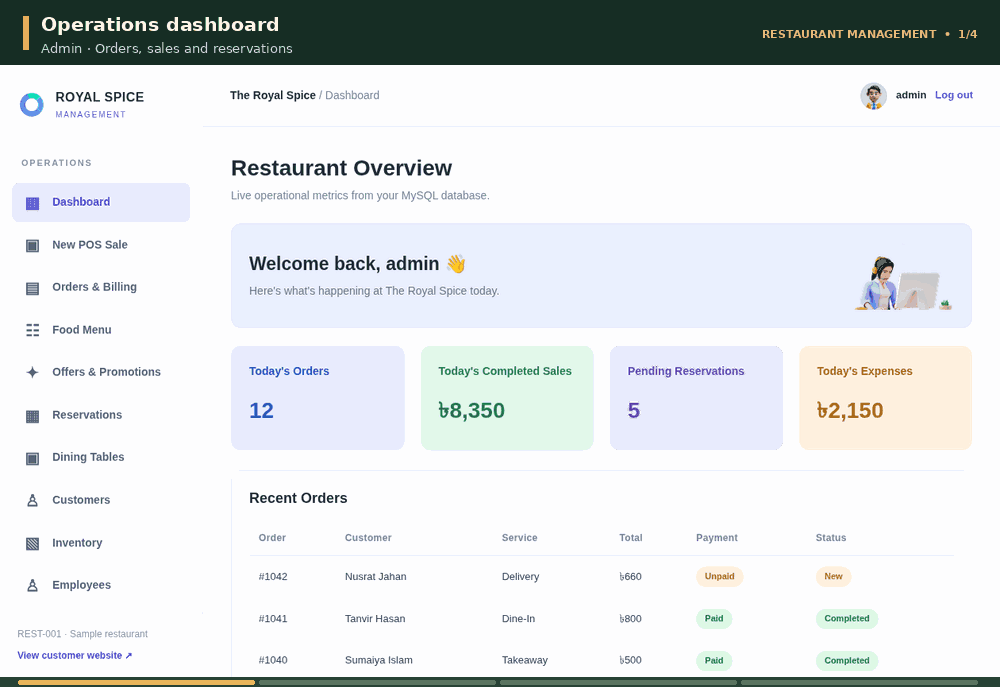

The Royal Spice
A connected restaurant ordering and operations prototype, from browsing the menu to processing orders at the counter.

Why I built it
A restaurant has two sides of the same problem: guests need to find dishes, choose how to order and submit requests; staff need to manage the menu, reservations, promotions and incoming sales. I built this as a practical way to explore how one web application could support both experiences without treating them as unrelated websites.
Who I designed it for
Guests ordering for dine-in, takeaway or delivery, plus restaurant team members using the administration and point-of-sale screens. All restaurant records in this project are demonstration data.
The core user journey
How I approached the problem
I focused on connecting the important user tasks to working application and data flows.
Map the journeys
I broke the application into guest tasks—discover dishes, filter, add to cart, apply offers and check out—and staff tasks such as managing menus, orders, tables and offers.
Connect the data
I used Flask routes, Jinja templates and SQLAlchemy models with MySQL so that menu, order and reservation information could flow between the two sides of the system.
Add interaction and safeguards
I combined server-rendered pages and responsive front-end interactions with Flask-Login and Flask-WTF to handle authenticated and form-based flows.
Review the full workflow
I examined how a guest moves from browsing to a receipt and how the management side presents order/POS information, using local development and fictional test content.
Why I chose this approach
Flask gave me direct control over routing and page-level behaviour while staying small enough to understand the complete request cycle. A relational database suits menu items, order lines and reservations because they need structured relationships. Separating guest and staff views also keeps each interface focused on its own tasks.
The result, without inflated numbers
A development MVP with customer pages for menu search, offers, cart, checkout and reservation requests, together with administrative and POS views. It demonstrates a joined-up workflow using fictional data; it is not a deployed restaurant system and does not establish real sales or conversion results.
What I learned while building
This project strengthened my understanding of the connection between front-end behaviour, database structure and staff operations. The important lesson was that building a feature is not enough: the hand-off between a customer action and the management workflow also has to make sense.
What I would improve next
Improve production security and validation, test edge cases around stock/order status and reservations, and run end-to-end tests before real-world deployment.
A closer look at the project
These previews help explain the interface and flow. They are labelled honestly where fictional data or simulated behaviour is involved.

